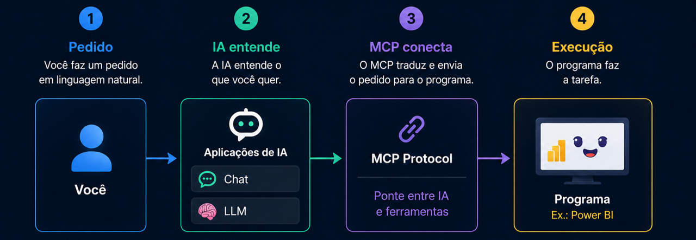
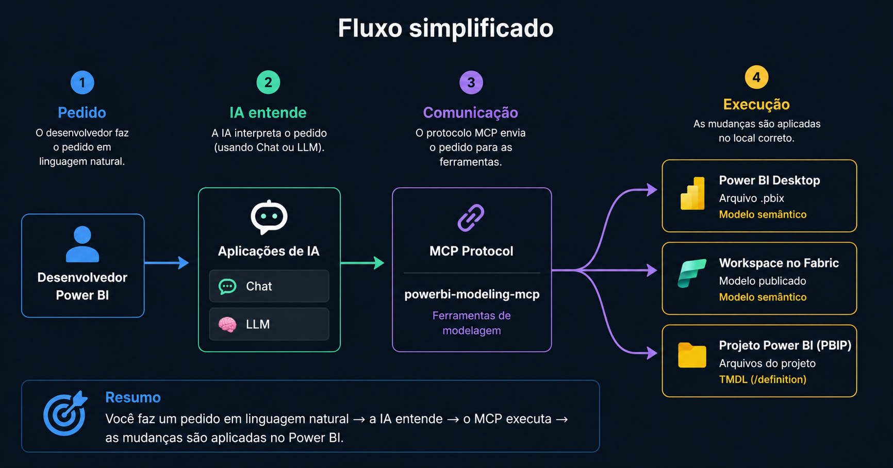
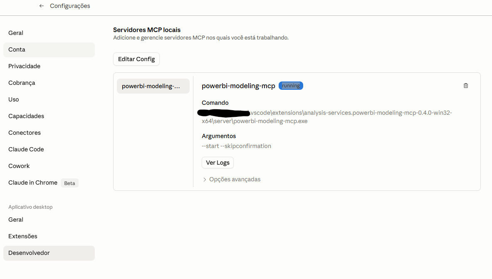
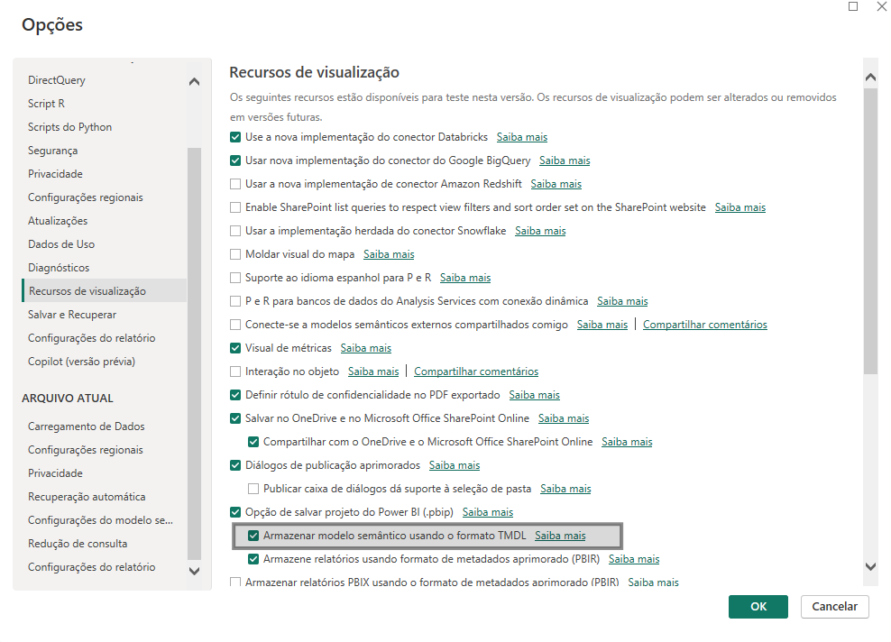

Skills
Skills são pacotes de instruções, arquivos e orientações que ensinam o Claude a trabalhar melhor em uma tarefa específica. Pense nelas como um manual personalizado: em vez de explicar tudo do zero a cada conversa, você entrega ao Claude um conjunto de regras, exemplos e padrões para ele seguir.
Para que servem?
Servem para padronizar tarefas recorrentes, como revisar textos, modelar dados, criar páginas, analisar relatórios ou seguir o tom de voz de uma marca.
Onde usar?
Podem ser usadas dentro do Claude para apoiar conversas, projetos e fluxos de trabalho que precisam de contexto consistente.
Cuidados
Antes de instalar uma skill, confira a origem, leia o conteúdo do pacote e priorize fornecedores confiáveis, como Anthropic, Microsoft, GitHub e comunidades reconhecidas.
Além de baixar skills prontas, você também pode criar suas próprias skills para tarefas que se repetem no seu dia a dia. O segredo é escrever regras claras, explicar quando a skill deve ser ativada e definir o padrão de resposta esperado.
Chame o criador de Skills
No Claude, digite o comando abaixo para iniciar a criação de uma nova skill personalizada.
Envie o prompt da Skill
Use o prompt abaixo para criar uma skill de revisão de textos em Português Brasileiro.
MCP
MCP significa Model Context Protocol. Ele é uma ponte que permite que a inteligência artificial agêntica converse com ferramentas, arquivos e programas para executar tarefas na prática — e não apenas responder sobre elas.

GitHub
GitHub é um lugar para guardar, organizar e acompanhar as mudanças dos seus projetos — especialmente quando você trabalha com arquivos, código, Power BI, VS Code e inteligência artificial. Nesta aula, ele aparece como apoio para encontrar arquivos, skills e recursos técnicos que facilitam a configuração do Claude com o Power BI.
Ao criar sua conta, você pode usar a conta Microsoft para agilizar o acesso.
VS Code
O VS Code é um programa para trabalhar com códigos e aplicativos. Ele permite editar, organizar e criar arquivos de programas e desenvolver soluções. Também pode ser usado para facilitar a configuração e conexão da I.A. com outras ferramentas, servindo como porta de entrada para os comandos. Nesta aula, vamos usá-lo para instalar extensões, localizar arquivos do MCP e editar o arquivo de configuração do Claude Desktop.
Conectar Claude ao Power BI

Esta é a parte mais importante da preparação. Siga o passo a passo com calma, copie os campos quando indicado e avance somente quando concluir cada etapa.
Instale o VS Code
Baixe o programa no botão abaixo e conclua a instalação.
Faça login com sua conta GitHub
Abra o VS Code e conecte sua conta GitHub para facilitar o uso das extensões e recursos do ambiente.
Instale o pacote de idioma Português Brasil
No VS Code, abra Extensões, pesquise por Portuguese (Brazil) Language Pack for Visual Studio Code, instale e reinicie o programa.
Instale a extensão Power BI Modeling MCP Server
Abra a loja de extensões do VS Code e instale a extensão oficial da Microsoft.
Localize o caminho do plug-in no computador
Copie o comando abaixo, cole na barra de endereço do Windows e pressione Enter.
Procure pela pasta analysis-services.powerbi-modeling-mcp-0.4.0-win32-x64, abra server e localize o arquivo powerbi-modeling-mcp.exe.
Cole aqui o caminho do seu arquivo
Depois de copiar o caminho no seu computador, cole no campo abaixo. A configuração da próxima etapa será montada automaticamente.
Abra o arquivo de configuração do Claude Desktop
No aplicativo do Claude, vá em Desenvolvedor → Editar Configuração e abra o arquivo claude_desktop_config no VS Code.
Para funcionar perfeitamente, todos os caminhos colocados no VS Code precisam estar entre aspas duplas e com duas barras em todo o caminho. Depois de colar o conteúdo, pressione CTRL + S para salvar a edição.
Reinicie completamente o aplicativo do Claude
Feche o Claude pelo Gerenciador de Tarefas. Ao reabrir, verifique se o servidor MCP aparece com o status running.

Baixe a Skill powerbi-modeling
Faça o download da skill que será usada como apoio para o trabalho de modelagem.
Adicione a skill no Claude
No aplicativo do Claude, clique em Customizar → Habilidades → Adicionar habilidades → Fazer upload de habilidade. Depois, selecione a pasta powerbi-modeling.
Instale e acesse o Power BI
Baixe o Power BI Desktop, instale no computador e faça login com sua conta Microsoft.
Ative o formato TMDL no Power BI
Com o Power BI aberto, vá em Arquivo → Opções e configurações → Opções → Recursos de visualização e marque a opção Armazenar modelo semântico usando o formato TMDL.

Salve, reinicie sua máquina e pronto: você estará preparado para começar a criar Dashboards com o Claude conectado ao Power BI.
Nas primeiras vezes, o Claude pode pedir algumas permissões para executar o diagnóstico e realizar as primeiras ações. Depois disso, o fluxo tende a ficar mais natural.
Criar Dashboard
Baixe a base de Excel, conecte-a a um arquivo de Power BI zerado e use os prompts abaixo para conduzir a construção do modelo e das análises.
Prompt inicial
Use este prompt para apresentar o objetivo do Dashboard e pedir que o Claude se conecte ao modelo aberto no Power BI.
Prompt unificado — modelagem, medidas e visual
Depois que o Claude reconhecer o modelo, use este prompt para solicitar a construção completa do Dashboard.
Material da aula
Acesse a pasta da aula para baixar os materiais, arquivos complementares e imagens utilizadas na explicação.